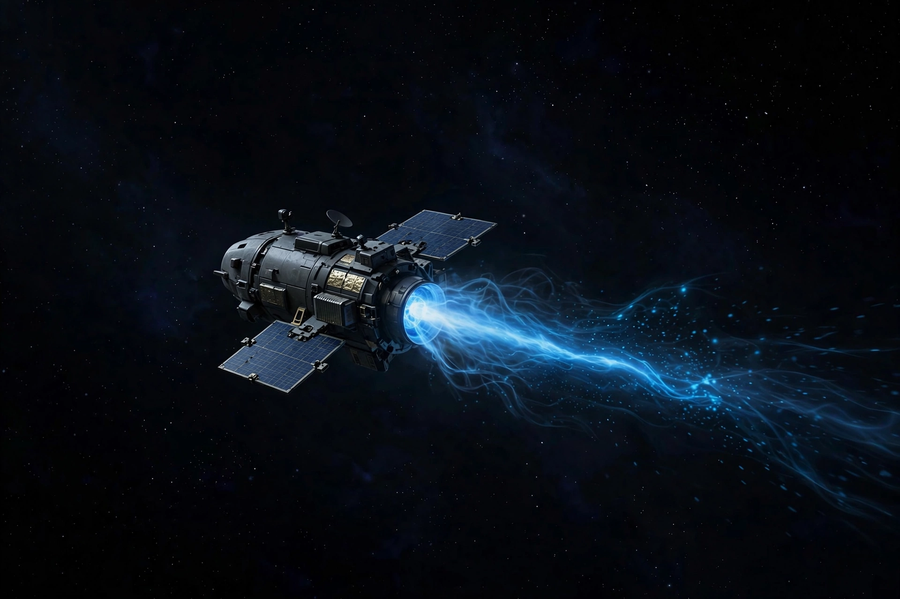

New Millennium program
From Wikipedia, the free encyclopedia
| New Millennium program | |
|---|---|
| Operator | NASA |
| Period | 1990s–2000s |
| Flagship | Deep Space 1 (1998) |
| Purpose | Flight-validate risky new technologies |

A New Millennium testbed.The New Millennium Program was a NASA initiative of the 1990s–2000s created to flight-test bold, unproven technologies — accepting higher risk on small, cheap missions so that flagship science craft would not have to. Its flagship, Deep Space 1 (1998), validated ion propulsion and autonomous navigation in deep space, directly enabling Dawn, Hayabusa and today's electric-propulsion fleet.
Other New Millennium flights included Deep Space 2 (Mars microprobes, lost with Mars Polar Lander), Earth Observing-1 (advanced land imaging) and Space Technology 5's nanosatellite trio. The programme embodied the 'faster, better, cheaper' era's best instinct: buy down risk early, on missions whose failure would be survivable.
Assessment
Though the programme wound down in the 2000s, its model — competed technology testbeds graded by flight heritage — persists in NASA's technology demonstration missions, including MOXIE and the solar-sail and optical-communications demos of the 2020s.